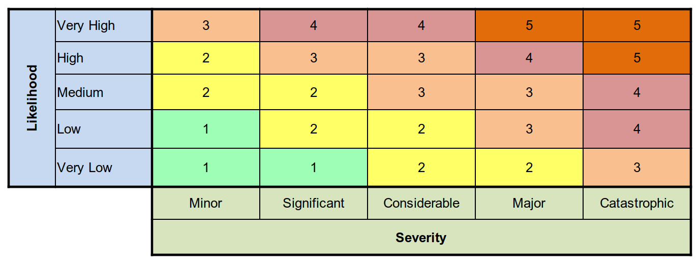

Albert Health Voice-based Digital Health Platform Hazard Log¶
In keeping with our commitment to transparency and openness, our Hazard Log is publicly visible and managed in GitHub using the Issues feature.
Each Issue represents a Hazard potentially affecting the project.
Hazards can be viewed (and indeed commented on, discussed, and improved) at the URL below:
https://github.com/Albert-Health/albert-health-clinical-safety/issues
Instead of the more usual and somewhat outdated and chaotic 'spreadsheet' model, often used for Hazard Logs, we are using the Issues facility in GitHub to record Hazards.
-
Labels are used to annotate Hazard Issues with
severity-andlikelihood-scores, from which we can derive arisk-level-. See all Labels here -
Milestones are used to designate the Initial Risk Assessment and Residual Risk Assessment. See all Milestones here
Most importantly, the discussion and evidence relating to any given risk is included in the recording of the risk. A complete history of the labelling is kept in the issue. Spreadsheet-based risk and hazard handling is inferior to this model, because spreadsheets are unsuited to discussion, text handling, and long-form discourse.
A Hazard which is never recorded in any Spreadsheet-based Hazard Log is 'Accidental deletion of a Hazard before it has been mitigated/risk-eliminated', yet anyone who has used a spreadsheet knows how easy it is to accidentally delete or modify a cell or row inadvertently. Put simply, a spreadsheet is a poor choice of technology for managing text and a totally unacceptable choice of technology for handling Hazards, yet it has become the industry standard across the NHS simply because the Hazard Log template issued by NHS Digital is a spreadsheet. Building and releasing an open source, free Hazard Log management platform would have been much a better approach, which NHS DIgital had ans still has the resources to do, but lack of understanding about the case of need limits their capability to execute on this.
Monitoring of Risk¶
Risk Matrix and Acceptability Criteria¶

GitHub Labels¶
Using the Label search feature, one can search for Hazards at any Risk Level, in order to triage the most risky Hazards for further action.
risk-level-5-unacceptable
risk-level-4-mandatory-risk-elimination
risk-level-3-undesirable
risk-level-2-acceptable
risk-level-1-acceptable
- We can filter for multiple labels.
Hazard Deletion¶
Hazards are never deleted but may be closed if there is no residual hazard and they are no longer relevant.
Alternative views¶
Using the GitHub Projects you can create a tabular (Excel-style) view, or a Kanban (Trello) view of your Hazards. Using built-in GitHub Issues and Pull Requests features you can link Hazards to their mitigations in code, to show a chain of evidence of clinical safety improvements.
Creating a Hazard¶
- Navigate to Issues
- Click on New Issue
- Use the Hazard Issue Template to guide you through adding the necessary information.
- Label according to Severity and Likelihood, then calculate Risk Level.
- Assign to CSO REMOVED (@REMOVED)
- Save by 'committing' to the repository.
- Review and ensure complete.
- Invite others to review and comment using @mention or by sharing the URL
Created: May 4, 2023